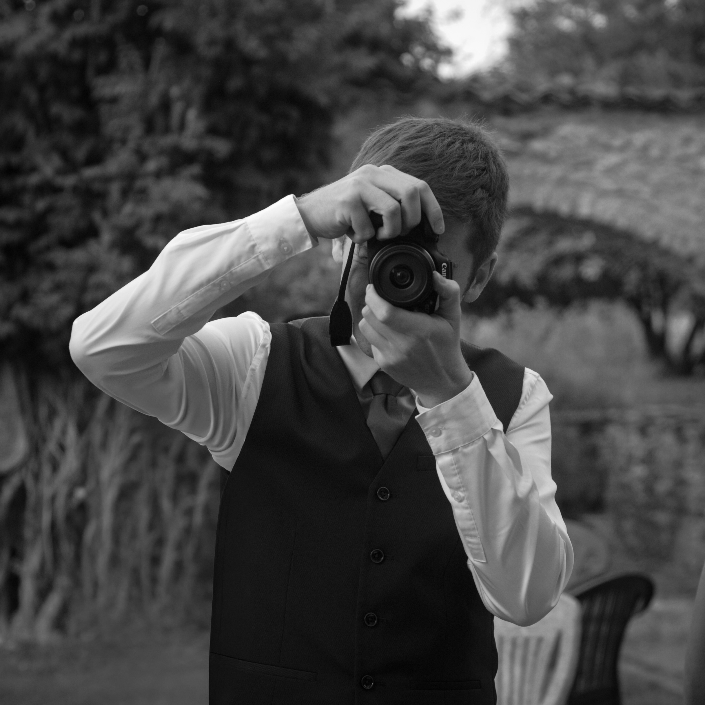

Qui suis-je ?
Je m'appelle Thomas Soleil. La photo, c'est ma passion — et j'y ai fait entrer mes deux autres : le chant et le rugby.
Sur le terrain, j'ai déjà photographié le Castres Olympiques, ainsi que les concerts de plusieurs choeurs.
Le mariage, c'est ma nouvelle étape officielle. J'ai eu un vrai coup de cœur en photographiant, en argentique, le mariage d'un ami et je veux maintenant vivre ça pour d'autres couples.
Je travaille aussi bien en numérique qu'en argentique, quand la scène mérite qu'on ralentisse. Je suis d'ailleurs en train de monter mon propre labo argentique à la maison, pour développer et tirer moi-même mes pellicules. Actuellement en BTS Photographie à Toulouse, je mets cette formation en pratique sur chaque reportage.
Thomas Soleil